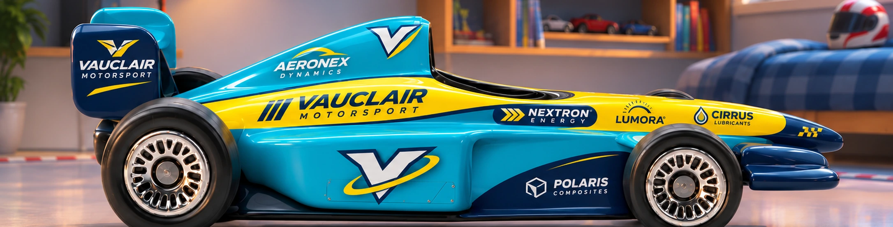
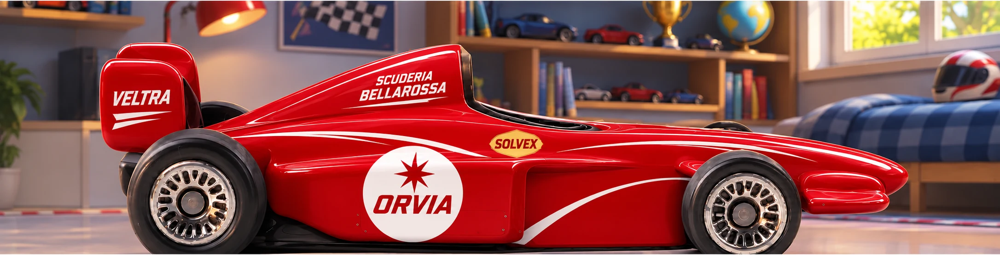
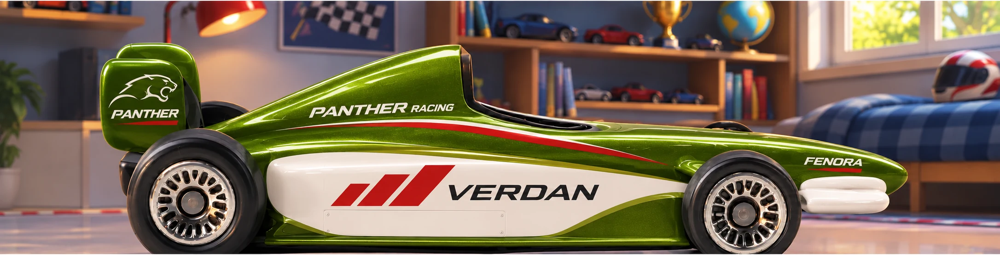
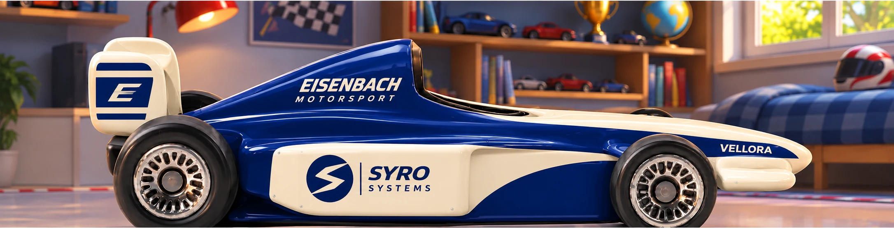

Vauclair Motorsport
16 · 24 · 32 Pixel Fahrzeuglänge
Türkis · gelbe Nase · marineblaue Flügel
Lange Nase, breite hintere Seitenkästen und freistehende Räder nach deiner weißen Top-Down-Vorlage. Oben das jeweilige Showroom-Design, darunter der Rennsprite und drei kleine Darstellungen auf Asphalt.
Spiel mit diesen vier Vorschau-Sprites öffnen →
Türkis · gelbe Nase · marineblaue Flügel

Scharlachrot · weiße Rundfelder · Goldakzent

Grün · weiße Flächen · rote Schrägbalken

Tiefblau · elfenbeinfarbene Nase und Seiten
Dies ist eine reine Grafikprobe mit demselben Renderer wie im Spiel. Die Rennsimulation wird hier nicht ausgeführt.
Einbindung im Spiel: In drawRace() → paint zeichnet CGPRaceSprites.draw() diese vier Teams. Die übrigen neun Teams verwenden weiterhin drawToy(). Startaufstellung, Live-Qualifying und Rennen nutzen dadurch dieselbe neue Darstellung.
Position, Winkel und Streckenskalierung kommen unverändert aus dem Spiel. Kollisionskörper, Fahrphysik, Fahrerwerte und Spielstände bleiben erhalten. Diese Vorschau enthält absichtlich keine kleinen Sponsor-Schriftzüge.